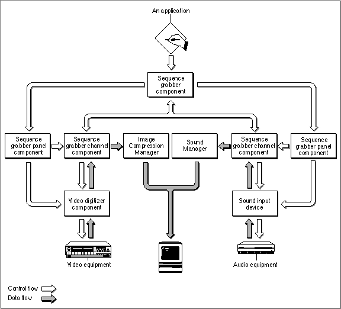
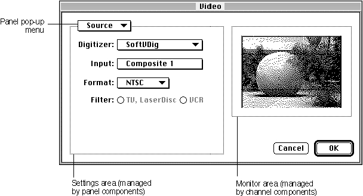

About Sequence Grabber Panel Components
This section provides background information about sequence grabber panel components. After reading this section, you should understand why these components exist and whether you need to create one.Sequence grabber panel components augment the capabilities of sequence grabber components and sequence grabber channel components by allowing sequence grabbers to obtain configuration information from the user for a particular digitizing source that is managed by a channel component. Consequently, sequence grabbers, channel components, and panel components have a close relationship. Figure 7-1 shows this relationship and how these components interact with one another to place digitized data into a QuickTime movie.
Figure 7-1 Sequence grabbers, channel components, and panel components

Sequence grabbers present a settings dialog box to the user whenever an application calls the
SGSettingsDialogfunction (see the chapter "Sequence Grabber Components" in this book for more information about this sequence grabber function). Applications never call sequence grabber panel components directly; application developers use panel components only by calling the sequence grabber component.Although the sequence grabber creates the dialog box and manages its interactions with the user, portions of the dialog box are controlled by panel components and channel components. Figure 7-2 shows a sample dialog box and identifies the various parts of the dialog box.
Figure 7-2 A sample sequence grabber settings dialog box

The sequence grabber creates the dialog box itself and manages the OK and Cancel buttons and the panel pop-up menu. Channel components are responsible for the monitor area on the right side of the dialog box. Panel components manage the
settings area immediately below the panel pop-up menu. Only one panel component is active at any given time; the user selects a panel component by manipulating the panel pop-up menu.When the user selects a specific panel component, the sequence grabber works with
that component to build the panel settings dialog area and present it to the user. The panel component processes dialog events and mouse clicks as appropriate and validates the user's settings. The sequence grabber then retrieves the settings from the panel component and stores those settings.There are two circumstances under which you should consider creating a sequence grabber panel component: first, if you want to support special digitizing equipment in the QuickTime environment; and, second, if you have created your own sequence grabber channel component.
If you have created special digitizing equipment, you may not have to create a special channel component for your equipment--the channel components provided by Apple may be sufficient for your needs. By providing a special panel component, however, you can allow the user to take advantage of your equipment's special capabilities.
If you have created your own channel component, you must create an accompanying panel component to allow the user to configure your channel.